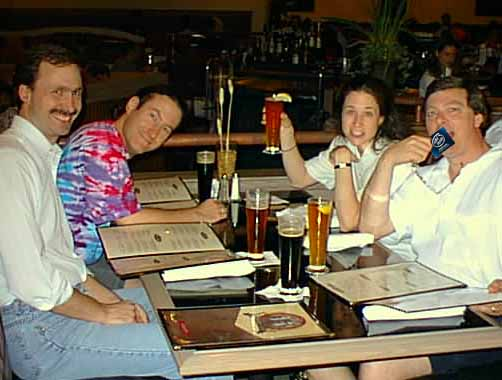

by Darrin Mossor
June 11, 1997
This late breaking news just in from DAC. While looking over one of the DAC pictures provided by an anonymous source (hereafter referred to as "Sore Throat"), something caught my eye. In one of the pictures, one of our Eagle brethren seems to have something in his hand. You can see the picture at right.
Curious about what might be in his hand, I contacted "Sore Throat" and it turns out that in addition to the missing Pentium reported last week, other Pentiums were missing from Viewlogic machines. No suspects had been identified but authorities were baffled. Additionally, all union workers have been cleared of suspicion. Authorities feel that it may, in fact, have been an inside job.
I dug a little further and contacted the manager of the brewpub where the Eagle team ate dinner at the end of Day 3. According to the manager of the establishment, the suspect ordered several bottles of expensive wine. When it came time to pay the bill, the suspect flashed what others at the table thought was a credit card. The waiter disappeared and the bill was taken care of! The manager claims that the bill was paid in cash. Small bills, nothing larger than a $20. No one at the table recalls any cash changing hands.
Further investigation reveals that the brewpub, "The NanoBrew", part of a chain of aCalifornia brewpubs owned by the McPentimum brothers, is known as a "Silicon Safe House", a new crime establishment known for trafficking in hot silicon. In a strange twist on classic money laundering techniques, officials reveal that hot silicon is traded for hot food and beer. These "Silicon Safe Houses" are doing a booming business in California. The stolen silicon finds it's way onto the black market or as part of a package deal in the brewpub. According to the authorities, this week's brewpub special is a "Pitcher and a Pentium" for $200.
Now for the shocking proof of this heinous crime. Obviously this budding crimelord had no idea that he was being caught on film. Using the latest in digital enhancement technology, this reporter took it upon himself to determine the truth in this case. The results speak for themselves in the photo to the left.
This is truely a sad day in Eagle history. It is our firm hope that the perpetrator can be brought to justice, reformed and hopefully one day, reintegrated into society. We wish him luck.
With the close of this report, this can be considered the end of "PentiumGate". Let's all hope that this dark day shall serve as a reminder to those that would perpetrate evil in the world that silicon was meant to be free! I mean really! All it is is a little precious metal, some sand and some floating point routines with errors in them. Is that really worth going to the Big House and being known in your cell block as "Silicon Sally"? I don't think so.
Good night.